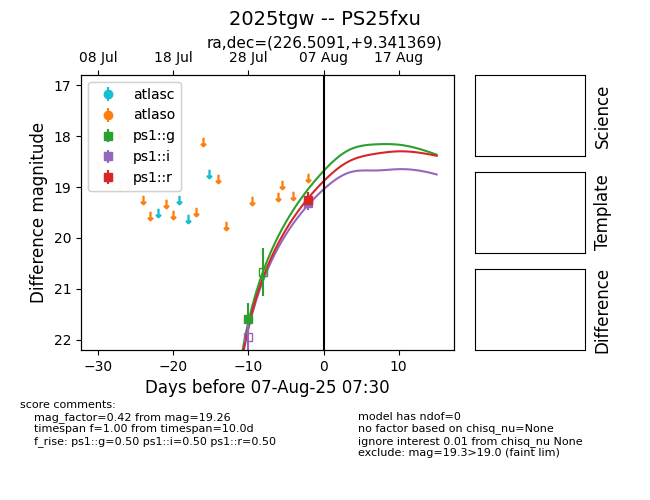

Target 2025tgw at 2025-08-07 07:30, see:
TNS: wis-tns.org/object/2025tgw
YSE: ziggy.ucolick.org/yse/transient_detail/2025tgw
alt names
2025tgw (yse,tns)
PS25fxu (panstarrs)
coordinates:
equatorial (ra, dec) = (226.5091,+9.34137)
galactic (l, b) = (10.1098,+53.61530)
photometry
last ps1::g=21.59, ps1::i=19.32, ps1::r=19.26
1 ps1::g, 1 ps1::i, 1 ps1::r detections
